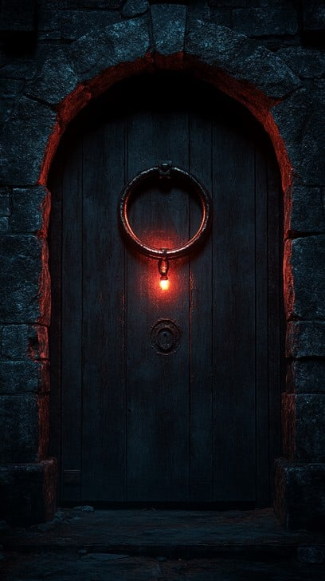

Der Raum ist von einem unnatürlichen, warmen Licht erfüllt, das von einer Werkbank stammt. Alte Uhrenteile liegen verstreut: Zahnräder, gebrochene Zeiger, Reste eines vergessenen Mechanismus. An den Wänden prangen seltsame Zeichen, als hätte jemand versucht, den Lauf der Zeit zu kontrollieren. Eine massive Holztür mit einem seltsamen Symbol darauf führt weiter in den Turm, allerdings entdckst du unter der Werkbank eine unscheinbare Holzfalltür, die ebenfalls dein Interesse geweckt hat.
